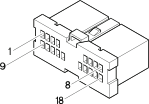

B001D Junction unit (FRONT)
- Path
- Electrical equipment > 3 Connectors > B Various fuse holders and valves > B1 Junction unit > B001D Junction unit (FRONT)
- Kind
- connector pinout (pin -> wire colour -> other end)
- Applies to
- engines: 1.6 16v; all production periods; only with equipment: Heater
- Interactive page
- https://sloeber94.github.io/elrnDB-fMltpl/en/#/186003812
Applies to: engines: 1.6 16v; all production periods; only with equipment: Heater

Wiring | Colour |
|---|---|
BIANCO (white) |
Topics linked from this page (12)
- 12 FRONT
- D001B Front/facia junction ( FRONT )
- F010B Left headlamp (FRONT)
- F20 Left side repeater
- I20 Reversing light switch
- I30 Brake pedal switch
- J50 Headlamp washer timer relay
- M030B Alarm control unit ( FRONT )
- N30 Left headlamp alignment corrector motor
- N31 Right headlamp alignment corrector motor
- P010A High-tone horn (FRONT)
- P011A Horn (FRONT)